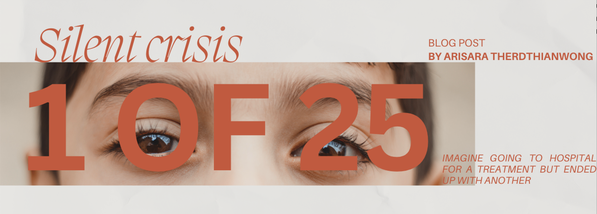
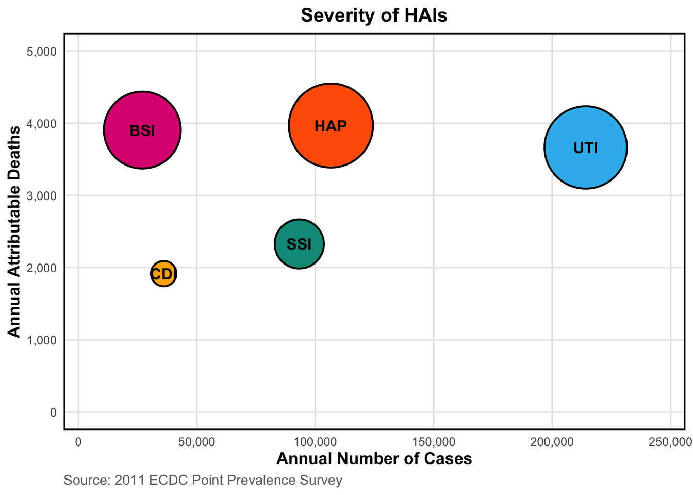

# Load packages
library(gt)
library(dplyr)
# Create data frame
hais_data <- data.frame(
Type = c("Pneumonia (HAP)",
"Surgical site (SSI)",
"Bloodstream (BSI)",
"Urinary tract (UTI)",
"Clostridioides difficile (CDI)",
"Total"),
Cases = c(106586,93222,26976,214150,36002,478222),
Deaths = c(3968,2328,3905,3664,1917,16245),
DALYs = c(69508,28842,58350,66701,20890,248920)
)
# Sorting data
hais_desc <- hais_data |>
filter(Type != "Total") |>
arrange(desc(Cases)) |>
bind_rows(hais_data |> filter(Type == "Total"))
Everybody goes to hospital to receive a cure. What if you went there for treatment but ended up with another infection.
The Problem: When Hospitals Become Sources of Infection
Healthcare-associated infections (HAIs) are infections that acquired during hospitalisation (WHO, 2010). This is not a rare occurrence since 1 in 25 patients in Germany were affected. These healthcare-associated infections (HAIs) are a silent crisis that strikes tens of thousands of people every year. According to Zacher et al. (2019), HAIs resulted in approximately 478,222 cases and claimed over 16,245 lives in 2011. To be exact, the burden of HAIs causes more death than from Influenza, Salmonella, Hepatitis B, and Measles combined. Despite Germany’s superb hospitals, the highest number of hospital beds and hospitalization rates exposed Germany to risk.
What’s even more shocking? Research found that many of these infections can be prevented with basic changes in hygiene and hospital procedures.
Understanding where these infections occur and which types are most dangerous is crucial for developing effective prevention strategies.
The Data
Where did the data come from?
This analysis uses data from 2011 European Centre for Disease Prevention and Control (ECDC) Point Prevalence Survey. The original study by Zacher et al. (2019) applied Burden of Healthcare-Associated Infections (BHAI) method to calculate national HAI burden.
We used Representative sample: 46 hospitals with 9,626 patients across Germany.
What was tracked?
5 major types of HAIs:
- Hospital-acquired pneumonia (HAP)
- Surgical site infections (SSI)
- Bloodstream infections (BSI)
- Urinary tract infections (UTI)
- Clostridioides difficile (CDI)
What was measured?
- Total number of cases
- Deaths linked to infection
- Disability-adjusted life years (DALYs), combining years lost to disability (YLDs) and years lost to life (YLLs)
How we prepared the data
For this blog post, I work with published point estimates from Zacher et al. (2019).
Data preparations:
Selecting key variables: From full BHAI dataset, we selected cases, deaths, and DALYs of five major HAI types.
Sorting data: Ordering data in descending based on case frequency to highlight the most common infections with total number at the bottom.
Tidy data: Structured the published estimates into suitable visualisation.
Analysis
Explore frequency of HAIs
| Annual burden of five HAIs in Germany | |||
|---|---|---|---|
| Point estimates only | |||
| Type of HAI | Number of Cases | Number of Deaths | Number of DALYs |
| Urinary tract (UTI) | 214,150 | 3,664 | 66,701 |
| Pneumonia (HAP) | 106,586 | 3,968 | 69,508 |
| Surgical site (SSI) | 93,222 | 2,328 | 28,842 |
| Clostridioides difficile (CDI) | 36,002 | 1,917 | 20,890 |
| Bloodstream (BSI) | 26,976 | 3,905 | 58,350 |
| Total | 478,222 | 16,245 | 248,920 |
| Source: 2011 European Centre for Disease Prevention and Control (ECDC) Point Prevalence Survey | |||
As shown in Table 1, healthcare-associated infections (HAIs) remain a major health concern in Germany. In 2011, there were 478,222 cases resulting in 16,245 deaths and 248,920 DALYs. Urinary tract infections were the most common HAI with 214,150 cases, accounting for 45% of all infections. Pneumonia followed with 106,586 cases, while bloodstream infections were rarest with 26,976 cases. But these only show the number of occurrence not the critical severity.
So what’s HAIs severity?

Frequency doesn’t tell the whole story. Figure 1 illustrates this severity patterns through three dimensions: Number of Cases (x-axis), Deaths (y-axis), and DALYs (bubble size).
Here we see that bloodstream infections (BSI) reaches nearly the same height as Urinary tract infections (UTI) despite being positioned on far left with only 26,976 cases. BSI kills approximate 145 patients per 1,000 cases compared to UTI which is 17 per 1,000 cases, representing 8 times difference in deadliness. However, Pneumonia (HAP) shows the largest bubble reflecting its combination of moderate frequency with 106,586 cases and high mortality of 3,968 deaths that create 69,508 DALYs, represent greatest contributor.
Together, pneumonia and bloodstream infections account for just 28% of cases but cause 51% of total disease burden.
By contrast, the visualisation also reveals the relatively moderate impact of surgical site infections (SSI) and Clostridioides difficile (CDI) with fewer cases and lower mortality.
Where should prevention strategies focus? the data suggests that prevention strategies should not just tackle only the most frequent HAIs like UTI, but prioritised those that cause the most harm to patients and health system. By targeting BSI and HAP that contributes to 51% of Germany’s burden, this could achieve far greater reductions in deaths and disability.
Conclusion
Healthcare-associated infections (HAIs) impose a substantial burden Germany’s healthcare system, with nearly 478,000 cases, over 16,000 deaths, and 249,000 DALYs annually. This analysis reveals an insight that reshaping prevention strategies is a MUST.
Pneumonia and bloodstream infections should be prioritise. While urinary infections contribute the most cases, they cause far fewer deaths per infection. This pattern suggests that prevention strategies should focus on saving lives and reducing disability, not just lowering case numbers.
Germany’s high hospitalisation rates and large number of beds create more opportunities for infections to spread, making prevention more urgent. According to Zacher et al. (2019), 20-30% of HAIs are preventable through better hygiene protocols and procedures. Therefore, Germany should focus on allocating resources on the infections that caused the most harm. By implementing strict hygiene protocols, improving data collection, and reducing avoidable hospital stays. These practices can potentially save thousands of lives annually while improving healthcare efficiency and patient safety and redundant cost.
References
WHO. (2010). The burden of healthcare-associated infection worldwide. https://www.who.int/news-room/feature-stories/detail/the- burden-of-health-care-associated-infection-worldwide
Zacher, B., Haller, S., Willrich, N., Walter, J., Sin, M. A., Cassini, A., Plachouras, D., Suetens, C., Behnke, M., Gastmeier, P., Wieler, L. H., & Eckmanns, T. (2019). Application of a new methodology and r package reveals a high burden of healthcare-associated infections (HAI) in germany compared to the average in the european union/european economic area, 2011 to 2012. Eurosurveillance, 24(46). https://doi.org/10.2807/1560-7917.es.2019.24.46.1900135